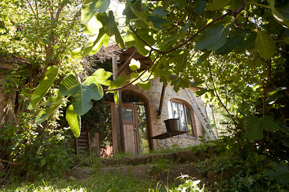

- 


Under the Tuscan sun...
Nestled in a natural amphitheatre in a mountain nature reserve 11 kilometers above Cortona Casa Valentina offers a taste of Tuscany wonder.
The peaceful “Casa Valentina” is set on a huge property overlooking the mystical peaks of Tuscany and Umbria.
This over 800 year old former farmhouse, traditionally built in local Tuscan limestone, has been renovated with great care and simplicity so that the three apartments have kept their original charm.
Surrounded by forest, birdsong and soothing nature it offers some wonderful hiking trails which start at your doorstep.
Tuscany awaits you!
Enjoy with us the traditional landscape of vineyards, cypress trees, olive groves and huge oak forests

Close to Lake Trasimeno lies the charming etruscan town of Cortona. It is a good alternative for anyone wanting a break or a bit more Peace than Party.
You can discover the area by hiking, on mountain bikes, on horseback or with our sailboat at Lake Trasimeno.
From Cortona there are excellent opportunities for cultural excursions in both Tuscany and Umbria. We are ready to help you plan your trips and outdoor activities such as olive picking and olive oil tasting, or a cooking course in Tuscan specialities.
A proposal for our journey "under the tuscan sun"
You don´t need a car if you stay at Casa Valentina
-

Day 1
If you are using air transportation, you arrive in Pisa, Rome or Florence (the closest airports), then take the train to Cortona. We will organize (by request) the transfer from the Cortona train station to Casa Valentina.
You will have the possibility to buy all you need for the next days in a store in Cortona
-

Day 2
Relax with a glass of vino Nobile, olives and homemade bread in your sunchair on your terrace...... Or discover, on short hikes, the hills of the national parc around Casa Valentina.
Don´t stay out too long, because if it's Pizza-Day at Casa Valentina, .you learn how to start the fire in the oven, make the dough and create your own hand made pizza!
-

Day 3
After a long, leisurely breakfast you pack your backpack for your hike down to Cortona. You follow the old Roman road, with panoramic views of the Val di Chiana, that once connected the Mediterrenian Sea with the Adreatic Sea.
Halfway down, take a break at the romantic monastry "Le Celle" that was founded by Saint Francis and was his secret hideway.
Enjoy the stunning views of lake Trasimeno and the Val di Chiana. Explore Cortona and take the bus back to Casa Valentina.
-

Day 4
Catch the train for a "day trip" to the magical city of Florence....it's only 1.5 hrs by train. See the historic sights, shop, enjoy the many museums & cultural events, ... and walk up to Piaziale Michelangelo to watch the sunset. Have dinner in the historic center, and catch the last train back to Cortona.
A taxi waits to bring you back to casa Valelntina from the Cortona trainstation.
-
Day 5
Go sailing, and visit the islands on Lago Trasimeno . Walk up to Castello Isabella for a viewpoint of how noble people used to celebrate their way of living.
There is enough time to have a swim in the lake and have a Cappuccino in the bar of the island.
-

Day 6
This day is dedicated to exploring the setting of "under the tuscan sun". Take the bus down to Cortona and have breakfast on the terrace of Teatro Signorelli" ( where Benigni kidnapped his "principessa" in the movie "Life is Beautiful").
Take a walk to Francis Mayes' house "Bramasole" and its beautiful garden. Don´t stay too long in the wine cellars of Cortona for wine tasting, as there is much to see in the museums and antique shops on the winding streets of Cortona.
Visit Ivan´s shop"Pozzo", on Via Nationale, to find presents for your family and friends back home!
-

Day 7
A-h-h-h, time has passed too quickly.. You came to Tuscany as a guest and you leave as a friend.
On the train back to the airport the view out of the window is like the final scene of one of Tuscany´s famous movies.....you leave with wonderful memories of your holiday at Casa Valentina, and dream of your return.